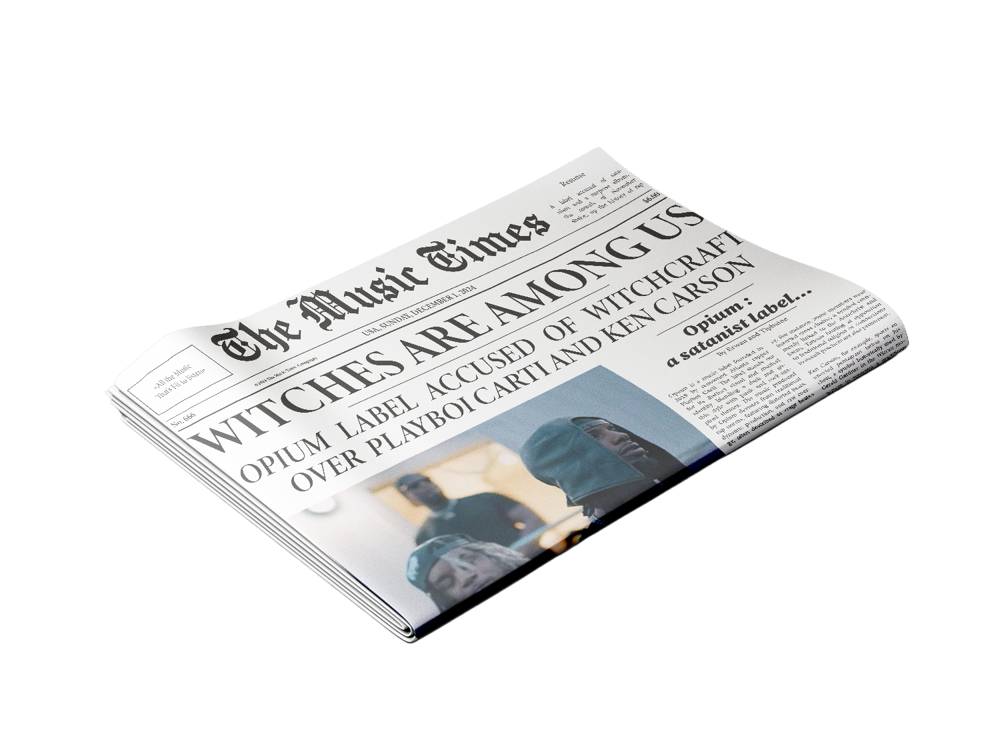

The Music Times
Projet scolaire
InDesign
2025
The Music Times est un projet scolaire fait en terminale en ETLV. Le but du projet était de créer une fake news sur une personnalités américaine et de la mettre en page sous forme de Une de journal, en s'inspirant d'un journal déjà existant.
Pour ce projet, j'ai décidé de reprendre la charte graphique et la composition du célèbre journal The New York Times, en utilisant la même structure, ainsi que des typographies et une hiérarchisation de l'information similaire.
Mon objectif à travers ce projet été de non seulement respecté le cahier des charges, mais aussi d'utiliser ma culture rap américain comme solution à la demande. J'ai donc détourné la fonction primaire du New York Times pour le détourner en journal présentant l'actualité rap américain.